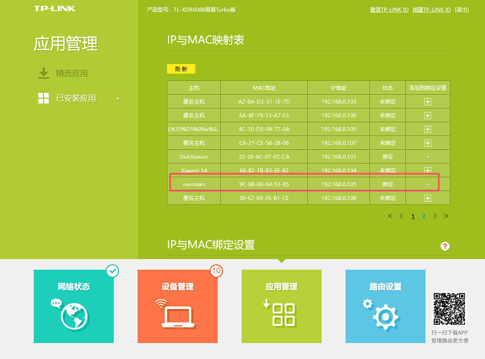
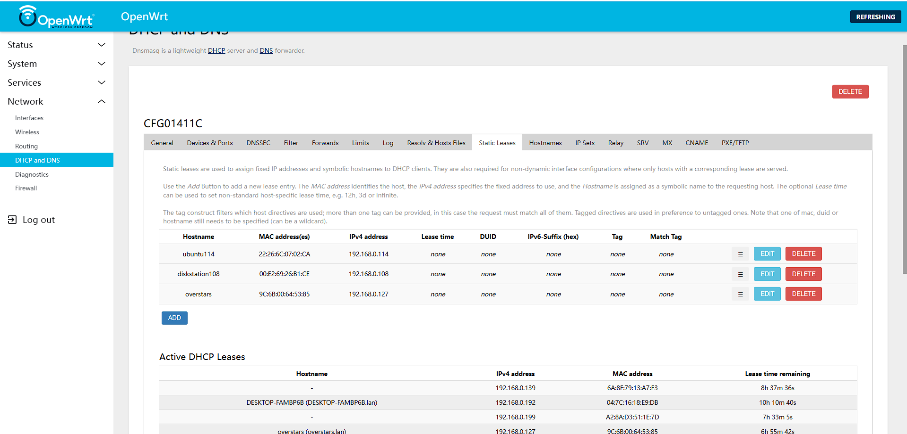
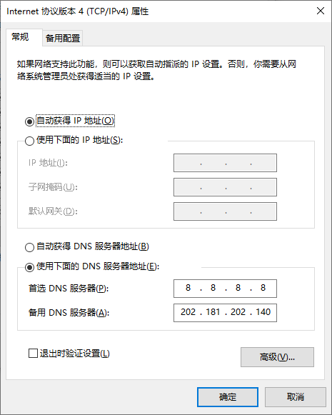
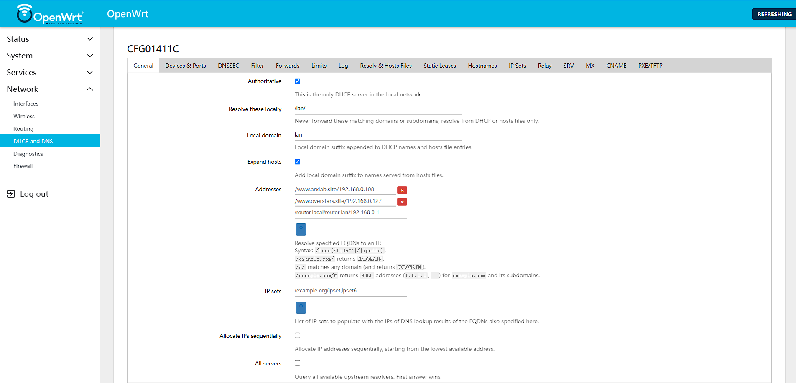
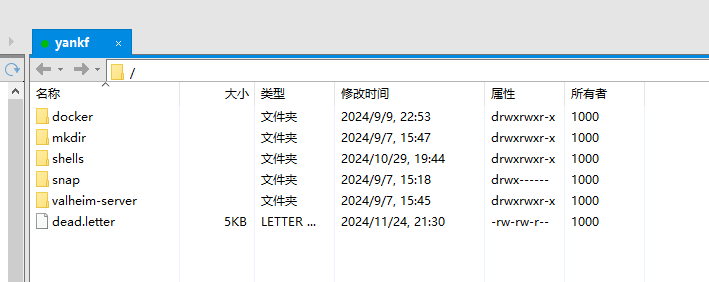
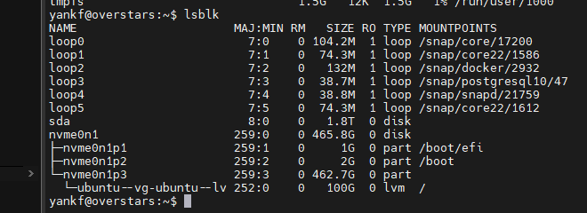
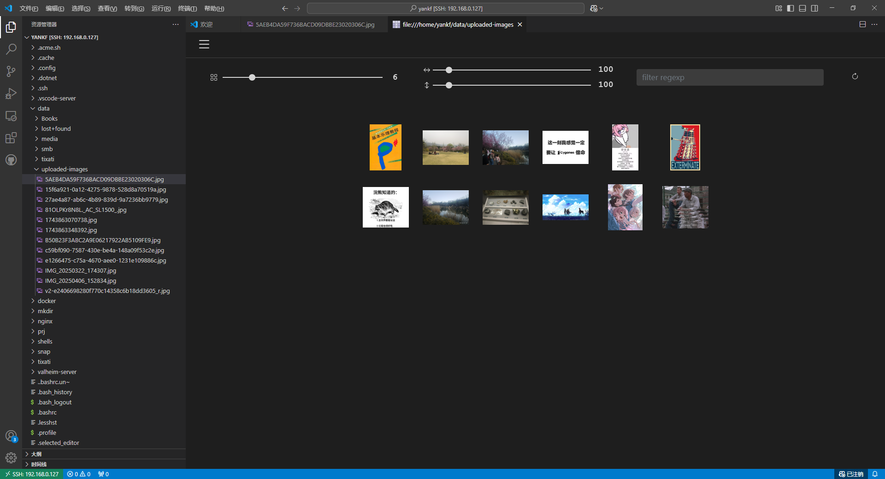

22年上半年趁着学生折扣还能用买了两年腾讯云，结果也没充分使用，今年过期了也没有再管。一直以来都有组一台当作个人服务器的想法，于是做了简单调研后便着手采购并搭建。
自建服务器 端口映射
服务
光猫
路由器
宿主机
docker
Service
navidrome
9001
9001
9001
无
overstars’ server（ssh访问）
9002
9002
22
无
image service（图床服务）
9003
9003
9003
无
nginx服务
9004
9004
9004
443
9003
组装
零件
功耗
价格
机箱+主板
ASRock DeskMini X600 Series 京东1299
CPU
Ryzen 5 8500G(100-000000931)
45W
京东1109
显卡
无
SO-DIMM DDR5内存
DDR5 笔记本内存条 5600MHZ 16G
淘宝252
SSD
SK hynix SC311 SATA 128G
现成的，M2接口应该兼容SATA协议
HDD
希捷 ST2000LM003 2.5寸 32M PMR 2TB
淘宝389
M.2 插座 (Key E), 支持 2230 型 Wi-Fi / 蓝牙模块
淘宝35，应该送一块
散热器
利民 AXP90-X36 36mm双平台背板风扇
京东129
系统准备 获取ubuntu服务器版本：https://cn.ubuntu.com/download/server/step1，Ubuntu Server 可以免费下载和使用。
适合初学者的 Ubuntu 服务器教程
设置时间同步 东八区
1 sudo timedatectl set-timezone Asia/Shanghai
汉字语言支持 1 2 3 4 5 6 sudo apt update sudo apt upgrade sudo apt install language-pack-zh-hans sudo apt install language-pack-ja sudo apt install fonts-noto-cjk sudo reboot
history显示操作时间 1 2 3 vim ~/.bashrc export HISTTIMEFORMAT="%F %T " source ~/.bashrc
基础设施
初始化设置 安装ubuntu sever时直接按照默认项配置即可，可以直接选择导入github的public key，方便后续直接ssh连接。
若需要通过外网访问，需要做如下设置：
光猫高级NAT设置 - 虚拟主机设置，添加你新开的端口转发至路由器。
路由器开启内网IP固定。
路由器虚拟服务器开启端口转发。
服务器防火墙开放对应端口。
服务器监听对应端口。
内网IP固定


内网域名访问——DNS劫持 先把指定的外部DNS服务器关掉，否则 DNS 请求不会经过 OpenWrt 的 dnsmasq 服务，导致劫持规则失效。
或者将路由器192.168.0.1设置为首选DNS，测试nslookup www.overstars.site 192.168.0.1。

然后配置要劫持的域名即可。

如果仍劫持不到的话，使用nslookup 看下应答的服务器是不是路由器，IPv6 DNS优先级是比IPv4高的，需要关掉。
开启ssh 1 2 3 4 5 6 7 8 9 10 11 12 13 14 15 # 查看是否安装了SSH服务 ps -ef |grep ssh # 没有安装的话，执行下面语句 sudo apt-get update #先更新下资源列表 sudo apt-get install openssh-server #安装openssh-server sudo ps -ef | grep ssh #查看是否安装成功 sudo systemctl restart sshd #重新启动SSH服务 # 进入ssh配置文件 sudo vim /etc/ssh/sshd_config # 设置ssh服务开机启动 sudo systemctl enable ssh # 查看ssh服务的状态 sudo systemctl status sshd
修改以下三项
1 2 3 Port 22 ListenAddress 0.0.0.0 PermitRootLogin yes
开启ftp 1 2 3 4 5 6 7 8 9 10 11 12 13 14 15 16 sudo apt-get install vsftpd # 设置开机启动并启动ftp服务 systemctl enable vsftpd systemctl start vsftpd sudo vim /etc/vsftpd.conf 找到如下两行 local_enable=YES # 允许本地用户登录 chroot_local_user=YES # 使用用户的本地账户目录作为ftp目录 allow_writeable_chroot=YES # 若上面设为YES，将用户的可写访问权限授予其主目录，或者另外指定写目录 write_enable=YES # 启用可以修改文件的 FTP 命令 # 重启服务 systemctl start vsftpd service vsftpd restart sudo /etc/init.d/vsftpd restart
需要自己创建用户
1 2 3 userlist_deny=NO userlist_enable=YES userlist_file=/etc/vsftpd.allowed_users
查看登录日志
1 vim -R /var/log/vsftpd.log
防火墙配置
1 2 3 4 5 6 7 8 9 10 11 12 13 14 15 16 17 # 启用被动模式 pasv_enable=YES # 设置被动模式使用的端口范围 pasv_min_port=40000 pasv_max_port=50000 # 可以选择设置被动模式的外部 IP 地址（如果使用 NAT） # pasv_address=your.external.ip.address # ftp sudo ufw allow 20:21/tcp # 允许被动模式端口范围 sudo ufw allow 40000:50000/tcp # 允许客户端主动模式数据端口（例如，假设使用 1024-65535） sudo ufw allow 1024:65535/tcp
重启服务及防火墙，使用被动模式，终于可以正常连接了

开启smb服务 安装smb
1 sudo apt-get install samba samba-common
配置共享目录，路径可以自己改
1 sudo chmod 777 /data/smb -R
配置smb，注意不要有奇怪的字符
1 2 3 4 5 6 7 8 9 10 11 12 13 14 sudo vim /etc/samba/smb.conf 在最下面添加即可 [Overstars] #共享的描述 comment = 一般是用来存点ipad资源的 path=/data/smb create mask=0755 directory mask=0755 #用来指定该共享路径是否可写 writable = yes #指定哪些用户可以访问共享路径，如果你想添加多个用户，用逗号分隔 valid users=yankf #可浏览 browseable=yes
设置防火墙白名单
重启smb
1 2 sudo /etc/init.d/smbd restart sudo service smbd restart
问题检测
1 2 3 systemctl status smbd.service # 检查服务状态 journalctl -xeu smbd.service # 查看 Samba 的日志文件 sudo tail -f /var/log/samba/log.smbd # 查看日志
提示拒绝访问，重设smb密码
开启防火墙 1 2 3 4 5 6 7 8 9 10 11 12 13 14 15 16 17 18 19 20 21 22 23 24 25 26 27 28 29 # 确认UFW状态 sudo ufw status # 开启防火墙 sudo ufw enable # 启用防火墙日志 sudo ufw logging on # 自用端口 sudo ufw allow 9001 sudo ufw allow 9003 sudo ufw allow 9004 sudo ufw allow 9005 # 允许ssh服务通过防火墙 sudo ufw allow http sudo ufw allow 80 sudo ufw allow https sudo ufw allow 443 sudo ufw allow ssh sudo ufw allow 22/tcp sudo ufw allow smtp sudo ufw allow Samba # 使ssh配置文件生效 sudo systemctl restart ssh sudo ufw reload # 查看日志 sudo tail -f /var/log/ufw.log # 删除一条防火墙规则 sudo ufw status numbered sudo ufw delete [自选数字]
禁止自动休眠 执行如下命令查看休眠模式的情况
1 systemctl status sleep.target
如果sleep状态是loaded，说明自动休眠开启
若masked，则已关闭自动休眠
1 2 3 4 ○ sleep .target - Sleep Loaded: loaded (/usr/lib/system d/system /sleep .target Active: inactive (dead) Docs: man:system d.special(7 )
关闭系统自动休眠
1 2 3 4 5 6 7 8 9 10 # 这些命令做了以下几点： # 通过mask命令，你禁用了所有休眠相关的systemd目标。 sudo systemctl mask sleep.target suspend.target hibernate.target hybrid-sleep.target # 如果你想要恢复自动休眠功能，可以使用以下命令： sudo systemctl unmask sleep.target suspend.target hibernate.target hybrid-sleep.target # # 通过set-default命令，你设置默认的运行级别为多用户文本模式（即命令行界面） sudo systemctl set-default multi-user.target sudo systemctl set-default graphical.target
重新加载 systemd 配置
1 sudo system ctl restart system d-logind.service
/etc/systemd/logind.conf 文件中的 IdleAction 和 IdleActionSec 参数用于配置系统在用户空闲时的行为，IdleActionSec 指定在用户空闲多长时间后执行 IdleAction 的操作。
1 sudo vim /etc/ systemd/logind.conf
设置如下
1 2 IdleAction = ignoreIdleActionSec = 0
磁盘分区 参考：https://cloud.tencent.com/developer/article/1835500来执行。
交换分区的大小通常为物理内存的 1 到 2 倍。
查看交换分区目前的大小
查看可用的分配空间
关闭交换空间
删除交换空间
创建交换文件
1 2 $ sudo fallocate -l 1G /swap.img $ ls -lh /swap.img
启用交换文件
1 2 3 4 $ sudo chmod 600 /swap.img $ ls -lh /swap.img$ sudo mkswap /swap.img $ sudo swapon /swap.img
额外分配盘空间 查看ubuntu发现了几块硬盘：lsblk命令 – 查看系统的磁盘使用情况 。
1 2 3 4 5 6 7 8 9 10 lsblk - d ∶仅列出磁盘本身，并不会列出该磁盘的分区数据- f ∶同时列出该磁盘内的文件系统名称- i∶使用 ASCII的线段输出，不要使用复杂的编码（再某些环境下很有用）- m ∶同时输出该装置在 /dev 底下的权限数据（rwx 的数据）- p ∶列出该装置的完整文件名!而不是仅列出最后的名字而已。- t ∶列出该磁盘装置的详细数据，包括磁盘队列机制、预读写的数据量大小等sudo fdisk -l sudo df -h
装机默认只分配给了 / 100G磁盘，感觉不太够用。

可以看出来第三块分区p3是有ssd的剩下所有内存的，只是没有分配，/home 可以单独分区，懒狗就不搞了，直接给 / 目录分配内存了。
按照Ubuntu 20.04.3-live-server 磁盘如何扩容 操作即可。
1 2 3 su 1 .例如增大至300 Glvextend -L 300 G /dev/mapper/ubuntu--vg-ubuntu--lv
提示
1 2 3 4 5 yankf@overstars:/$ su Password: root@overstars:/# lvextend -L 300G /dev/mapper/ubuntu--vg-ubuntu--lv Size of logical volume ubuntu-vg/ubuntu-lv changed from 100.00 GiB (25600 extents) to 300.00 GiB (76800 extents). Logical volume ubuntu-vg/ubuntu-lv successfully resized.
再 lsblk 看一下
1 2 3 4 5 6 7 8 9 10 11 12 13 14 root@overstars:/ NAME MAJ:MIN RM SIZE RO TYPE MOUNTPOINTS loop0 7:0 0 104.2M 1 loop /snap/core/17200 loop1 7:1 0 74.3M 1 loop /snap/core22/1586 loop2 7:2 0 132M 1 loop /snap/docker/2932 loop3 7:3 0 38.7M 1 loop /snap/postgresql10/47 loop4 7:4 0 38.8M 1 loop /snap/snapd/21759 loop5 7:5 0 74.3M 1 loop /snap/core22/1612 sda 8:0 0 1.8T 0 disk nvme0n1 259:0 0 465.8G 0 disk ├─nvme0n1p1 259:1 0 1G 0 part /boot/efi ├─nvme0n1p2 259:2 0 2G 0 part /boot └─nvme0n1p3 259:3 0 462.7G 0 part └─ubuntu--vg-ubuntu--lv 252:0 0 300G 0 lvm /
扩容
1 2 3 4 5 6 7 8 resize2fs /dev/mapper/ubuntu--vg-ubuntu--lv root@overstars:/home/yankf# resize2fs /dev/mapper/ubuntu--vg-ubuntu--lv resize2fs 1.47.0 (5-Feb-2023) Filesystem at /dev/mapper/ubuntu--vg-ubuntu--lv is mounted on /; on-line resizing required old_desc_blocks = 13, new_desc_blocks = 38 The filesystem on /dev/mapper/ubuntu--vg-ubuntu--lv is now 78643200 (4k) blocks long.
查看一下，扩容完毕
1 2 3 4 5 6 7 8 9 10 11 12 root@overstars:/home/yankf# df -h Filesystem Size Used Avail Use% Mounted on tmpfs 1.5G 4.9M 1.5G 1% /run efivarfs 128K 15K 109K 12% /sys/firmware/efi/efivars /dev/mapper/ubuntu--vg-ubuntu--lv 295G 22G 260G 8% / tmpfs 7.4G 0 7.4G 0% /dev/shm tmpfs 5.0M 0 5.0M 0% /run/lock /dev/nvme0n1p2 2.0G 183M 1.7G 10% /boot /dev/sda1 492G 149G 318G 32% /data /dev/nvme0n1p1 1.1G 6.2M 1.1G 1% /boot/efi overlay 295G 22G 260G 8% /var/lib/docker/overlay2/a144410d503ae5389ec7100f48e6ebdadb3215e1d6d0b304029fb51d2d43ab93/merged tmpfs 1.5G 12K 1.5G 1% /run/user/1000
将第二块硬盘分一部分空间给data lsblk 可以看到 sda 还有1.8T的空间没有分区，打算分一部分给 /data。
查看已有磁盘
进入 sda 进行分区
输入 n
Partition type，输入 p
输入分区号 1
First sector (2048-3907029167, default 2048)，默认即可
新建500G的分区，输入 500G ，即 1048578047
提示
1 2 Last sector, +/-sectors or +/ -size {K,M,G,T,P} (2048 -3907029167 , default 3907029167 ): 1048578047 Created a new partition 1 of type 'Linux' and of size 500 GiB.
移除签名，输入 y
写入，输入 w
再次执行sudo fdisk -l 查看是否创建
将新分区格式化为 ext4 ，性能相对于 ext3 有很大提升，且支持单个16G、系统1EB的文件量。
1 2 3 df -T lsblk -f sudo mkfs -t ext4 /dev/sda1
1 2 sudo mkdir /data #新建 sudo mount /dev/sda1 /data #挂载
查看uuid，找到新分区id
提示
1 2 3 4 5 6 7 8 9 10 11 12 yankf@overstars:/$ sudo blkid /dev/nvme0n1p3: UUID="mERgFh-lRJc-Firn-URSm-mg3p-2Mji-RrayJj" TYPE="LVM2_member" PARTUUID="6c5ca1e2-465f-4daa-8e8c-8b79d109d3a9" /dev/nvme0n1p1: UUID="CA72-30F7" BLOCK_SIZE="512" TYPE="vfat" PARTUUID="55cd3410-aee6-41ea-afe2-9d93e4da041b" /dev/nvme0n1p2: UUID="10ded670-c854-45c7-bbb5-bd1d4fac82f1" BLOCK_SIZE="4096" TYPE="ext4" PARTUUID="268b6989-4bd3-47dd-9acc-65d8bb004998" /dev/mapper/ubuntu--vg-ubuntu--lv: UUID="1c6a9158-f60c-4d12-8a82-aba82f3e6afd" BLOCK_SIZE="4096" TYPE="ext4" /dev/loop1: BLOCK_SIZE="131072" TYPE="squashfs" /dev/loop4: BLOCK_SIZE="131072" TYPE="squashfs" /dev/loop2: BLOCK_SIZE="131072" TYPE="squashfs" /dev/loop0: BLOCK_SIZE="131072" TYPE="squashfs" /dev/sda1: UUID="4a1a3251-c5d5-4eff-b085-67851647362d" BLOCK_SIZE="4096" TYPE="ext4" PARTUUID="002bacfb-01" /dev/loop5: BLOCK_SIZE="131072" TYPE="squashfs" /dev/loop3: BLOCK_SIZE="131072" TYPE="squashfs"
将新分区的 uuid 写入 /etc/fstab
加入一行
1 2 UUID 格式的文件系统 挂载点 文件系统类型 挂载选项 转储选项 检查顺序UUID =4 a1a3251-c5d5-4 eff-b085-67851647362 d /data ext4 defaults 0 2
更改 /data 的权限
1 2 sudo chown yankf:yankf /data sudo chmod +777 -R /data
将/data挂载给yankf，这样可以直接通过/home/yankf/data目录访问/data，可以不用给ftp额外配置目录
1 2 3 4 5 6 7 8 9 10 11 12 # 创建目标目录 sudo mkdir -p /home/yankf/data # 使用 mount 命令将源目录挂载到目标目录。使用 --bind 选项来实现。可以使用 -o 选项来设置目标目录的访问权限与源目录访问权限相同 sudo mount --bind -o rbind /data /home/yankf/data # 确保在系统重启后仍然保留挂载 sudo vim /etc/fstab # 添加以下行 /data /home/yankf/data none bind 0 0 # 测试挂载是否成功 df -h | grep /home/yankf/data # 卸载挂载目录 sudo umount /home/yankf/data
编译环境配置 JAVA配置 1 2 3 4 sudo apt update && sudo apt upgrade sudo apt install openjdk-17-jdk java --version
设置 JAVA_HOME 环境变量 1 2 3 4 5 6 7 sudo vim /etc/environment JAVA_HOME="/usr/lib/jvm/java-17-openjdk-amd64" source /etc/environmentecho $JAVA_HOME
远程访问 查看图片 在VS Code装上Image tile viewer插件，ssh到服务器上后，对应的文件夹右键即可批量查看图片。

公网通过域名访问 域名与DDNS 可以在腾讯云域名 购买一个域名，之后去 DNSPod 管理控制台 验证、添加。
购买域名时会问你要不要买专业版DNS解析，可以仔细看看这个云解析 DNS 版本套餐差异 ，决定买不买，个人使用没必要买。
提交订单前需要已实名审核的信息模板，审核很耗时间，记得提前搞。
【DNS解析】如何设置DDNS(动态域名解析)
DDNS其实就是不断把自己的域名和目前的公网IP更新给dns运营商
在dnspod这里创建API 密钥 ，注意保存。
按照ArDNSPod 项目进行DDNS设置，添加如下定时任务，每30分钟执行一次。参考DNSPod 传统 API：记录列表 去调试。
1 */30 * * * * yankf / home/yankf/ shells/dnspod-shell/ ddnspod.sh
可以通过grep CRON /var/log/syslog命令查看执行记录。
SSL证书 使用nginx启用ssl证书和https服务实际部署参考这里
SSL协议：Let’s Encrypt
Certbot：自动获取和安装 Let’s Encrypt 的免费 SSL/TLS 证书。
音频服务器